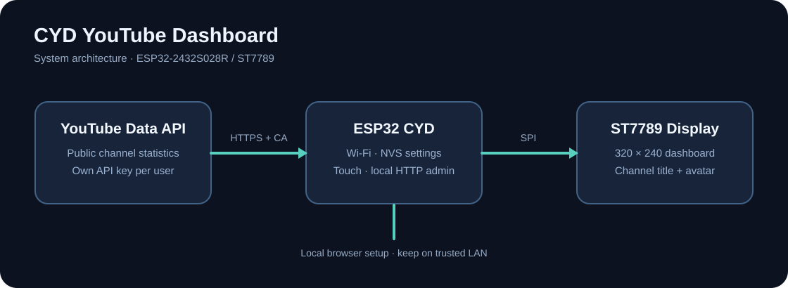

Your channel, on a dedicated display.
CYD YouTube Dashboard brings public YouTube channel statistics to a compact ESP32 touchscreen. Configure it once, then let it run independently.
Browser application write and boot confirmed on one ST7789 CYD
Get started
Open the browser installer or create a local full-device backup. The installer writes firmware; backup is optional. Check your board revision before proceeding.
Build it yourself AVAILABLE
Use PlatformIO with the supported ST7789 board. Use this route to compile and upload your own firmware.
Browser USB installer HARDWARE TESTED
Install the supplied firmware over USB in Chrome or Edge. An ESP32-D0WD-V3 / 4 MB / ST7789 board was successfully programmed and booted with settings retained. Other boards and first-time full installs remain unverified. Backup is optional; without one, the installer uses a three-image write that can affect existing settings.
Open installer · Local backup · Recovery guide · USB diagnostics
Connect your channel
Create a separate Google Cloud project, enable YouTube Data API v3 and restrict the key to that API.
Follow development
Check what has been tested, which risks remain and the limitations of the current public test release.
Backup is optional, but recommended
Full 4 MB backups can contain Wi-Fi passwords, API keys and other secrets. Store them privately. The optional local backup tool requires Python and esptool; it does not run on GitHub Pages. Browser restore is not available.
Flashing can leave a device unbootable. Without a backup, the original firmware and settings may not be recoverable. Read the recovery guide.
Test coverage and limitations
Application-only flashing and subsequent boot were confirmed on one device. Full three-image installation, factory-first-boot behavior and full-device restore have not been hardware validated. Do not treat this as a universal CYD installer.